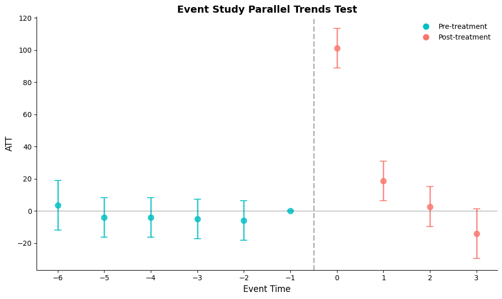

flowchart TB
A1[News Source 1]
A2[News Source 2]
A3[News Source 3]
A4[...]
A5[News Source N]
B[Aggregate Raw Reports]
C[Full News Report Dataset<br/>2021-2025]
subgraph D["LLM Pipeline"]
direction LR
E1[Model 1: Relevance Classification]
E2[Model 2: Location Annotation]
E1 --> E2
end
F[Post-Processing]
G[Regional Crime News Dataset<br/>with State-Level Annotations]
A1 & A2 & A3 & A4 & A5 --> B
B --> C
C --> D
D --> F
F --> G
style D fill:#e1f5ff
style G fill:#e8f5e9
Media Bias and Democratic Backsliding: Evidence from U.S. Media Bias and Presidential Interventions
ABSTRACT
How do political leaders enable democratic backsliding? Before answering this grand puzzle, it is worthy to investigate a crucial component within this mechanism: Do political leaders’ public messaging significantly bias media coverage? This paper investigates the effect of elite messaging on social media platforms on partisan media coverage. Using evidence from U.S. crime reporting and presidential social media interventions, I estimate the causal effect of President Trump’s Truth Social posts about crime on regional news coverage intensity. The analysis employs a staggered difference-in-differences design, exploiting the timing of presidential interventions targeting Washington D.C. and Illinois and comparing changes in crime news article counts against 49 control states. Results show that presidential rhetoric significantly increased partisan media coverage of crime in targeted regions, with D.C. experiencing 179 additional articles per month and Illinois 24 additional articles, despite no corresponding change in actual crime rates. I argue that political leaders can actively shape media narratives that diverge from objective conditions. This study contributes to understanding how elite rhetoric creates distorted information environments that may enable democratic backsliding.
Keywords: democratic backsliding, elite rhetoric, media bias, populism, crime coverage
MOTIVATION AND RESEARCH PROBLEM
Recent events in the United States have revealed a concerning pattern in the relationship between political leadership, media coverage, and public perception. President Trump has repeatedly called out democratic leaning cities for high crime rates and deployed the National Guard to combat crime in these areas (Executive Orders 2025; The White House 2025). These interventions have been accompanied by extensive media coverage, particularly from partisan outlets, emphasizing crime problems in the said cities. Republican social media and right-wing legacy media have consistently amplified narratives about rising crime in urban, Democratic-controlled areas.
However, a major discrepancy emerges when examining actual crime data. According to the FBI Crime Data Explorer (Federal Bureau of Investigation 2025), the actual crime rates in many of these cities tell a substantially different story than the narrative promoted by political leaders and echoed in partisan media coverage. This gap between reality and media representation raises fundamental questions about media independence, the role of political elites in shaping information environments, and the consequences for democratic governance.
This research addresses this question: Do political leaders’ public messaging significantly bias media coverage?


LITERATURE REVIEW
The discrepancy between actual crime rates and media narratives reveals a fundamental gap in our understanding of democratic backsliding. While existing literature establishes that media bias exists and that better performance provides more stable regimes, evidence that poor actual performance causes democratic backsliding remains limited. This research addresses this gap by showing that it is not actual performance but perceived performance that matters. Partisan media bias enlarges the gap between perceived and actual performance, creating support for drastic changes that favor democratic backsliding. The research clarifies the mechanism through which elite rhetoric shapes information environments, going beyond simple documentation of media bias to show how political leaders actively create and amplify distorted narratives that undermine democratic stability.
Media Bias and Partisan Coverage
There is strong academic consensus that media bias exists in contemporary news coverage. Research has documented partisan bias in news media coverage of political leaders and events (Niven 1999, 2001). Studies examine how partisan use and perceptions shape news consumption, with research analyzing patterns in cable news programming (Coe et al. 2008). The phenomenon of ideological selectivity in media use has been documented, showing evidence of how audiences engage with politically aligned media sources (Iyengar and Hahn 2009).
Research has also examined media bias in specific coverage domains. Studies analyze news media’s relationship with stereotyping in crime news coverage, examining linguistic patterns in reporting (Gorham 2006). More recent research extends analysis to partisan differences in coverage of specific events, including mass shootings in the United States (Shah 2021). Additionally, scholarship examines how news media partisanship shapes coverage of policy issues and technologies, finding that partisan orientation influences framing and emphasis in reporting (Shaikh and Moran 2024).
While early research argued that objective news topics were not affected by partisan bias (Niven 1999, 2001), subsequent work demonstrated that partisan selective exposure extends even to “soft” subjects such as crime (Iyengar and Hahn 2009). However, recent developments present a further evolution in this dynamic. Political elites now directly contest objective data through social media platforms, creating alternative narratives that contradict official statistics. Recent presidential communications about crime explicitly diverge from FBI data, with the White House claiming crime is “out of control” despite official statistics showing otherwise (The White House 2025). This represents a new phase: political leaders are not merely benefiting from existing media bias or selective exposure patterns, but may be actively generating competing factual claims about objective crime data that partisan media outlets follow suit.
Democratic Backsliding and Performance
The evidence on how socioeconomic performance affects democratic stability is mixed. Better socioeconomic performance indeed provides more stable regimes (Carothers and Hartnett 2024). But evidence that lack of such performance causes democratic backsliding remains limited. In some cases, governance failures drove voters toward backsliding leaders. Brazil’s Lava Jato corruption scandal alienated citizens from mainstream parties and turned them to Bolsonaro (Hunter and Power 2019). El Salvador’s violent crime crisis led citizens to embrace Bukele (Economist 2019). It is worth noting that the perception of performance such as corruption also contributed to backsliding in India in 2014 and Mexico in 2018 (Sridharan 2014; Sánchez-Talanquer and Greene 2021). On the other hand, Achen and Bartels (2016) show that voters’ perceptions of governmental performance may be only loosely tied to objective facts. Examining twelve cases across diverse regions, Carothers and Hartnett (2024) find that in eight of twelve cases inequality was trending downward before backsliding began; poverty levels decreased in nine of twelve cases, substantially in India and Poland; and in several cases—Bangladesh, India, the Philippines, Poland, and Turkey—growth was relatively high by regional and global standards. Governance failures such as corruption and crime played an important role in five cases—Brazil, India, Mexico, El Salvador, and the Philippines. Only three cases—Brazil, Hungary, and Tunisia—experienced major economic downturns before backsliding. While actual performance shows mixed results in causing backsliding, the perception of performance becomes a factor worth examining.
The literature on democratic backsliding has also established that backsliding leaders win elections when voters embrace promises of disruptive changes. In the pivotal elections that brought backsliding leaders to power, voters were embracing the promise of significant, even disruptive change in economic, social, or political domains (Carothers and Hartnett 2024). These voters were not throwing their support behind political figures who openly advocated ending democracy; many appeared to be trying to save democracy by giving it a reform-oriented reset (Carothers and Hartnett 2024). This suggests the potentiality that fabricating crises and exaggerating performance gaps can be a powerful tool for backsliding leaders to win elections by promising drastic changes.
MAIN ARGUMENT
Building on the existing literature, the following mechanism emerges: media bias shapes how citizens perceive political conditions, and when perceived performance diverges from actual conditions, voters become receptive to leaders promising reform, creating conditions for democratic backsliding.
In this mechanism, I argue that political leaders strategically generate biased narratives to shape media coverage. The resulting partisan media bias systematically distorts reality in coverage, reducing perceived performance relative to actual performance. This enlarges the gap between actual and perceived government performance, creating more support for disruptive changes and hence enabling democratic backsliding.
Partisan media respond to elite cues because they share audiences with ideologically aligned leaders. When a leader speaks, their supporters expect aligned media to cover it. Outlets that ignore such messaging lose viewers to competitors who amplify it. Both sides benefit: leaders gain narrative reach, media gain engaging content.
Crime coverage is specifically susceptible to this dynamic because of what has changed in the media environment. Political leaders can now directly contest official data through social media, bypassing traditional gatekeepers. Crime is particularly vulnerable because it is emotionally salient, statistically complex enough to selectively interpret, and event-driven in ways that allow highlighting individual incidents regardless of aggregate trends.
Building on the theory, this paper tests the first link in this mechanism: whether elite messaging increases biased media coverage.
HYPOTHESES
Building on this argument, I develop a hypothesis that tests the mechanism through which political leaders undermine democratic stability. This hypothesis examines the elite intervention mechanism: whether political leaders can actively shape information environments through strategic communications.
Hypothesis: Political leaders’ strategic communications increase the gap between actual and perceived performance.
This hypothesis captures elite agency in creating biased narratives. If political leaders can successfully manipulate public perception through strategic communications that partisan media amplify, we should observe a widening gap between objective performance indicators and media coverage intensity following elite interventions. This represents a direct test of whether backsliding leaders actively construct the conditions for democratic erosion rather than merely exploiting existing grievances.
DATA SOURCES
This research utilized multiple data sources and generated new variables. Crime rate data came from the FBI Crime Data Explorer (Federal Bureau of Investigation 2025), which provides crime statistics across U.S. cities and states and allows tracking of temporal trends in various crime categories.
Media coverage data was collected through third-party news aggregation APIs (TheNewsAPI 2025; NewsData.io 2025), enabling systematic collection of news coverage about crime from CNN and Fox News domains and allowing comparison between outlets with different partisan orientations. This allows an API integration to be built in the future to collect news coverage about crime from more media outlets, rather than fixing the data sources to only CNN and Fox News.
News article classification and location annotation were performed using Llama 3.1 8B Instruct (AI@Meta 2024) deployed locally via Ollama (Ollama 2024). This model was selected for several reasons: (1) it is open-source and locally deployable, eliminating API costs and ensuring data privacy; (2) the 8B parameter size provides sufficient capability for binary classification and entity extraction tasks while remaining computationally efficient; (3) the instruction-tuned variant excels at following structured prompts and producing JSON-formatted outputs; and (4) the labeling task only requires generating a small number of output tokens, so the Q4_K_M quantization preserves sufficient accuracy while reducing memory requirements.
Presidential communications were collected from Truth Social (Trump Media & Technology Group 2025), enabling precise measurement of elite intervention timing and content.
RESEARCH DESIGN
The experiment examined whether political leaders increase media bias by creating biased narratives. The unit of analysis was state-time observations, allowing for systematic comparison across different contexts and periods. The dependent variable was the gap between actual and perceived performance, operationalized as the difference between actual crime rates from FBI data and the intensity of media coverage of crime in the same location and time period.
The key intervention was President Trump’s Truth Social posts about crime in specific regions, namely Illinois and District of Columbia, which served as interventions that could be precisely timed and measured. The analysis controlled for baseline crime rates, state voting records, and temporal and regional fixed effects. The expected outcome was that political leaders’ strategic communications increase the gap between actual and perceived violent crimes, particularly when those narratives align with partisan media outlets’ ideological orientation and when the state is controlled by the opposing party.
Given that the treatment, Trump’s Truth Social posts about crime in specific regions, occurred at different times for Illinois and District of Columbia, this analysis employed the Callaway and Sant’Anna (2021) difference-in-differences estimator (csdid) rather than the traditional two-way fixed effects model. This methodological choice addressed the documented bias in conventional difference-in-differences estimators when treatment timing varies across units, ensuring more robust causal inference in this staggered adoption design.
The difference-in-differences approach is appropriate because the research question concerns the causal effect of a discrete intervention on an outcome. The identification strategy relies on the parallel trends assumption: absent presidential intervention, treated and untreated states would have followed similar trajectories in crime news coverage. The DRDID estimator addresses the selection problem arising from non-random treatment assignment—the president targeted Democratic-controlled areas, so treated states systematically differ from control states. DRDID combines propensity score weighting with outcome regression, providing consistent estimates even if one model is misspecified. The CSDID estimator handles staggered treatment timing by computing group-time specific effects using only never-treated units as controls, avoiding the bias that arises when already-treated units serve as implicit controls for later-treated units.
This design fits the empirical setting because Trump’s Truth Social posts constitute a natural experiment with identifiable intervention timing for DC and IL. The 49 states that were not targeted serve as a credible control group. The staggered timing—DC in August 2025, IL in September 2025—provides within-design replication and requires an estimator that properly handles treatment effect heterogeneity across cohorts.
However, this identification strategy requires accurate state-level media coverage data that links each news article to a specific geographic location. Existing news datasets lack such localized annotation. Manual coding of thousands of articles is infeasible. Traditional keyword-based filtering produces high false-positive rates by capturing articles that mention crime without substantively covering crime in a specific state. To address these data limitations, this study employs automated classification.
EMPIRICAL STRATEGY
Data Generation
Motivation
The choice to employ Large Language Models (LLMs) for data generation is driven by the limitations of existing methodologies and the specific advantages LLMs offer. Existing datasets often lack the granular, real-time, and localized specificity required to analyze crime reporting nuances across different states. Manual annotation is prohibitively expensive and time-consuming, while traditional keyword-based filtering frequently results in high false-positive rates by capturing irrelevant contexts.
From an LLM perspective, these models are necessary because of their unique ability to parse semantic context. Unlike simple keyword matching, an LLM can distinguish between a news report that is substantively about a crime in a specific location and a general policy discussion that merely mentions crime-related terms. This semantic capability is essential for accurately mapping news coverage to specific regional crime data.
Prompts Engineering
The data generation process utilized a single news report that comprises title, description, and keywords as the unit of processing. The model was instructed to return the output strictly in a JSON format. This structured return format (Section 14) was chosen to mitigate hallucination by enabling the model to reject irrelevant texts before attempting location extraction and providing explicit options to return “None” for ambiguous cases by employing a two-stage prompting strategy.
Challenges and Solutions
A significant challenge in using LLMs is the potential for hallucination or fabrication, where the model might generate incorrect locations or details. To mitigate this, the process processed only one unit (report) at a time. This isolation prevented context bleeding, where the model might inadvertently carry over location information from a previous report to the current one in one conversation.
Furthermore, the two-stage prompt design and specific output fields act as critical safeguards. By first asking for a relevance check, the model is given a chance to “back off” and reject irrelevant texts before attempting location extraction. This reduces the likelihood of the model hallucinating a location for a non-relevant text just to satisfy a prompt. Additionally, the option to return “None” for the location field provides a valid exit path, further discouraging the fabrication of location data when the text is ambiguous or lacks specific geographic information.
Statistical Analysis
The test used difference-in-differences designs that specified the dummy variables for the first treatment group and relative time from the intervention. This approach allows for causal inference of how the elite rhetoric intervention affects the outcome variable of two treated units that are treated at different times.
This analysis employed the Doubly-Robust Difference-in-Differences (DRDID) estimator because the treatment and control groups were not balanced. The treated units (DC and IL) received presidential interventions precisely because they are Democratic-controlled areas that Trump targeted in his rhetoric. This systematic selection meant treated states differed from control states in observable characteristics. DRDID adjusts for these differences by combining propensity score weighting and outcome regression, providing robustness against model misspecification.
Furthermore, this analysis used the Callaway and Sant’Anna (2021) difference-in-differences estimator (CSDID) because treatment timing varied across unit groups. DC was treated in August 2025 while IL was treated in September 2025. CSDID estimates group-time specific average treatment effects and aggregates them appropriately, avoiding the bias that arises in traditional two-way fixed effects models when treatment timing is staggered.
Doubly-Robust Difference-in-Differences Estimation
The DRDID estimator estimates the Average Treatment Effect on the Treated (ATT) as:
\[ ATT_{DR} = \mathbb{E}\left[\left(\frac{G}{\mathbb{E}[G]} - \frac{\frac{p(X)(1-G)}{1-p(X)}}{\mathbb{E}\left[\frac{p(X)(1-G)}{1-p(X)}\right]}\right)(Y_1 - Y_0 - m(0,X))\right] \]
In this formulation, \(G\) denotes the treatment indicator, taking value 1 for states that received presidential intervention (DC and IL) and 0 for control states. The term \(Y_1 - Y_0\) represents the change in monthly crime news article count between the post-treatment period and the pre-treatment period. The propensity score \(p(X)\) captures the probability of receiving treatment conditional on observable covariates, while the outcome model \(m(0,X)\) estimates the expected change in the outcome for control units conditional on their characteristics. The weighting structure rebalances treated and control observations to achieve covariate balance, while the outcome model adjustment removes residual bias.
The propensity score is estimated via logistic regression:
\[ p(X) = P(G=1|X) = \frac{\exp(\gamma_0 + \gamma X)}{1 + \exp(\gamma_0 + \gamma X)} \]
where \(\gamma_0\) is the intercept and \(\gamma\) represents the coefficient vector on covariates \(X\). In the covariate-adjusted specification, \(X\) includes the state-level crime rate per 100,000 population, which accounts for baseline differences in actual crime levels between treated and control states.
The outcome model follows the improved local projection specification:
\[ m(0,t,X) = \mathbb{E}[\Delta Y_{it} | D=0, X_i] = \alpha_0 + \beta X \]
where \(\Delta Y_{it} = Y_{it} - Y_{i,t-1}\) represents the change in monthly article count from the pre-treatment to the post-treatment period. This differenced specification estimates the expected outcome trajectory for control units, which serves as the counterfactual for what treated units would have experienced absent treatment.
In the empirical application, the outcome variable \(Y\) was the monthly count of crime-related news articles attributed to each state, constructed from CNN and Fox News coverage classified by the LLM pipeline. The treatment indicator \(G\) equaled 1 for DC (treated in August 2025) and IL (treated in September 2025), and 0 for the remaining 49 states that served as the control group.
Callaway and Sant’Anna Difference-in-Differences Estimation
The CSDID estimator computes group-time specific average treatment effects (ATT(g,t)) before aggregation.
The group-time average treatment effect \(ATT(g,t)\) for cohort \(g\) at time \(t\) is defined as:
\[ ATT(g,t) = \mathbb{E}[Y_t - Y_{g-1} | G_g = 1] - \mathbb{E}[Y_t - Y_{g-1} | C = 1] \]
At here, \(g\) indexes the treatment cohort by the time period when treatment first occurs: \(g = 202508\) for DC and \(g = 202509\) for IL. The term \(Y_t\) denotes the outcome (monthly article count) at time \(t\), while \(Y_{g-1}\) represents the outcome in the period immediately preceding treatment onset for cohort \(g\). The indicator \(G_g = 1\) selects units belonging to treatment cohort \(g\), and \(C = 1\) selects never-treated control units—the 49 states that did not receive presidential intervention during the study period. The estimator thus compares the change in outcomes for treated units relative to the change for never-treated controls, computed separately for each cohort-time combination.
To summarize treatment effects across cohorts and time periods, the dynamic aggregation scheme computes event-study parameters:
\[ ATT_{dynamic}(e) = \sum_{g} \frac{P(G=g)}{\sum_{g} P(G=g)} \cdot ATT(g, g+e) \]
where \(e\) denotes event time—the number of periods relative to treatment onset. Negative values of \(e\) correspond to pre-treatment periods, \(e = 0\) to the treatment period itself, and positive values to post-treatment periods. The weights \(P(G=g) / \sum_g P(G=g)\) represent the proportion of treated units in each cohort, ensuring that larger cohorts receive proportionally greater weight in the aggregated estimate. This dynamic specification enables visualization of treatment effect trajectories and provides a direct test of the parallel trends assumption through examination of pre-treatment event-study coefficients.
In the empirical implementation, the outcome \(Y\) was the valid news frequency at the state-month level. The time periods spanned from January 2025 to October 2025 (\(t \in \{202501, ..., 202510\}\)). The covariate-adjusted specification included the crime rate per 100,000 population to account for baseline differences in actual crime levels. All group-time ATT estimates used the DRDID estimator described above, and the dynamic event study aggregation examined relative time periods from \(e = -7\) to \(e = +2\), capturing the trajectory of media coverage before and after presidential intervention.
Descriptive Analysis


The trend presented in Figure 2 reveals a notable divergence in crime coverage between partisan media outlets during the period of 2021-2025. While CNN’s monthly crime news article count shows a relatively stable or declining trend in recent months, Fox News demonstrates a substantial surge in crime-related coverage during the same period. This divergent pattern is particularly pronounced following President Trump’s social media interventions regarding crime in Democratic-controlled areas. The stark contrast between these two partisan outlets’ coverage intensity, despite tracking the same underlying crime phenomena, provides initial support for the hypothesis that partisan media bias systematically distorts crime coverage.
This descriptive analysis suggests that the relationship between elite rhetoric, partisan media coverage, and the gap between actual and perceived crime rates merits rigorous empirical testing through the proposed Callaway and Sant’Anna (2021) difference-in-differences (csdid) design.
Results
Parallel Trends Assessment
Before proceeding with causal inference, the parallel trends assumption must be examined. The two-way fixed effects (TWFE) event study provides an initial diagnostic for this assumption by estimating treatment effects at each relative time period.

The event study reveals that pre-treatment coefficients (periods \(e < 0\)) cluster around zero with confidence intervals that generally include zero, suggesting that treated and control units followed similar trajectories prior to presidential intervention. This pattern provides visual support for the parallel trends assumption that should treatment did not happen, DC and IL would have exhibited crime news coverage trends comparable to the control states. The post-treatment coefficients show substantial positive effects, indicating that presidential rhetoric increased crime news coverage in targeted states relative to untreated states.
Limitations of the TWFE Estimator
While the event study may provide useful diagnostic evidence, its two-way fixed effects estimator is insufficient for valid causal inference in this staggered adoption design. Callaway and Sant’Anna (2021) demonstrate that conventional TWFE estimators produce biased estimates when treatment timing varies across units. Three sources of bias apply directly to this analysis.
First, TWFE implicitly uses already-treated units as controls for later-treated units. In this design, DC (treated August 2025) serves as an implicit control for IL (treated September 2025) after DC’s treatment, creating a “forbidden comparison” that contaminates the estimated treatment effect.
Second, when treatment effects vary over time, as expected when media coverage responds dynamically to presidential rhetoric, the TWFE estimator esstentially assigns weights to different group-time effects. This may lead to some time periods’ treatment effects receive negative weights, causing the aggregate estimate to be a weighted average that may not recover any interpretable causal parameter.
Third, the TWFE estimator assumes homogeneous treatment effects across cohorts and over time. If the effect of presidential intervention differs between DC and IL, or if the treatment effect grows or decays over the post-treatment period, TWFE conflates these heterogeneous effects into a single biased coefficient.
These limitations motivate the use of the Doubly Robust Difference-in-Differences estimator (Sant’Anna and Zhao 2020) and the Callaway and Sant’Anna (2021) difference-in-differences estimator (CSDID), which computes group-time specific average treatment effects using only never-treated units as controls and aggregates them with appropriate weights.
Doubly Robust Difference-in-Differences Estimation
Table 1 presents the DRDID estimates for the Average Treatment Effect on the Treated (ATT) for both DC and IL, with and without covariate adjustment for baseline crime rates.
| Model | ATT | Std. Error | t-value | Pr(>|t|) | 95% Conf. Interval |
|---|---|---|---|---|---|
| DC (No Covariates) | 179.38 | 0.69 | 261.34 | 0.000 | [178.03, 180.73] * |
| IL (No Covariates) | 24.48 | 3.15 | 7.77 | 0.000 | [18.31, 30.65] * |
| DC (With Covariates) | 178.33 | 0.41 | 437.88 | 0.000 | [177.53, 179.13] * |
| IL (With Covariates) | 23.91 | 2.47 | 9.68 | 0.000 | [19.06, 28.75] * |
The DRDID estimates show statistically significant treatment effects for both treated states. DC experienced an increase of approximately 179 additional crime news articles per month following the presidential intervention in August 2025. IL showed a smaller but still significant increase of approximately 24 additional articles per month after the September 2025 intervention. All estimates are significant at the p < 0.001 level.
The covariate-adjusted specifications, which control for baseline crime rates per 100,000 population, yield similar point estimates. DC’s ATT decreases from 179.38 to 178.33, while IL’s ATT decreases from 24.48 to 23.91. This stability across specifications indicates that the treatment effect estimates are robust to observable differences in actual crime levels between treated and control states. The reduction in standard errors under covariate adjustment reflects improved precision from accounting for baseline heterogeneity.
The magnitude difference between DC and IL is notable. DC’s treatment effect is approximately 7.5 times larger than IL’s, despite both receiving presidential interventions. This disparity may reflect DC’s unique political status as the nation’s capital, its smaller geographic scope, or differences in the intensity of presidential rhetoric directed at each location.
CSDID Group-Time Average Treatment Effects
The Callaway and Sant’Anna estimator computes group-time specific average treatment effects, ATT(g,t), for each treatment cohort \(g\) at each time period \(t\). In this staggered adoption design, Group 202508 represents DC (treated in August 2025) and Group 202509 represents IL (treated in September 2025). Figure 4 presents the ATT(g,t) estimates for both cohorts across the study period.


For Group 202508 (DC), the pre-treatment estimates cluster tightly around zero, supporting the parallel trends assumption. The treatment effect spikes to approximately 175 additional articles in August 2025, then declines in subsequent months. For Group 202509 (IL), the post-treatment effect in September 2025 reaches approximately 22 additional articles.
However, a potential concern emerges in the IL estimates. The ATT(g,t) for Group 202509 shows positive effects in August 2025 (approximately 13 articles) and July 2025 (approximately 8 articles), periods before IL’s own treatment in September 2025. Two factors may explain this pattern.
First, the monthly aggregation of data does not align precisely with treatment timing. Trump’s social media posts targeting DC and IL occurred within weeks of each other, not separated by a full 30-day interval. When aggregated to monthly observations, the treatment effect for IL may partially appear in earlier calendar months due to this temporal mismatch.
Second, anticipation and spillover effects may be present. When the president called out DC for high crime, partisan media outlets may have preemptively increased coverage of crime in other Democratic-controlled areas, including IL. This spillover would generate positive ATT(g,t) estimates for IL before its formal treatment date.
Robustness Check
The parallel trends assumption is fundamentally untestable because it concerns counterfactual outcomes. The HonestDiD framework (Rambachan and Roth 2023) addresses this limitation by computing confidence intervals that remain valid under controlled violations of parallel trends. Rather than assuming parallel trends hold exactly, HonestDiD asks: how large can the violation be before the treatment effect becomes statistically indistinguishable from zero?


The x-axis, \(\bar{M}\), represents the maximum allowed deviation from parallel trends, expressed as a multiple of the estimated pre-treatment trend differences. At \(\bar{M} = 0\), the analysis assumes parallel trends hold exactly, yielding the original CSDID estimate (blue point). As \(\bar{M}\) increases, the analysis allows for progressively larger violations of parallel trends, and the confidence intervals (red) widen accordingly.
The results show that the treatment effect estimate remains statistically significant (confidence interval excludes zero) up to approximately \(\bar{M} = 2\). This indicates that even if the parallel trends violation is twice as large as the observed pre-treatment trend differences, the conclusion that presidential rhetoric increased crime news coverage would still hold. Only at \(\bar{M} = 5\) and beyond does the confidence interval approach zero. Both the covariate-adjusted and unadjusted specifications produce similar sensitivity patterns, suggesting the findings are robust to moderate violations of the parallel trends assumption.
Conclusion
This study provides evidence that presidential rhetoric increases regional crime news coverage from partisan media outlets. The DRDID estimates show DC experienced an increase of 179.38 additional crime news articles per month following the August 2025 intervention, while IL experienced an increase of 24.48 additional articles per month after the September 2025 intervention. Both estimates are statistically significant at p < 0.001 and remain stable under covariate adjustment.
The CSDID group-time estimates confirm these findings. DC’s treatment effect at August 2025 is 179.65 additional articles (SE = 0.67), and IL’s treatment effect at September 2025 is 21.47 additional articles (SE = 1.11). The magnitude difference between DC and IL may reflect DC’s unique political salience as the nation’s capital. Notably, IL shows significant positive effects before its own treatment: 7.78 additional articles in July 2025 and 13.65 in August 2025. This pre-treatment effect suggests spillover from DC’s intervention, where partisan media increased coverage of other Democratic-controlled areas after the president called out DC.
The HonestDiD sensitivity analysis indicates that results remain robust to parallel trends violations up to \(\bar{M} = 2\), meaning the treatment effect remains significant even if pre-treatment trend differences were twice as large as observed. These findings support Hypothesis 1: presidential strategic communications increase the gap between actual and perceived performance through increased partisan media coverage.
Discussion
Several limitations constrain the scope and generalizability of these findings.
First, data collection is limited to CNN and Fox News. The treatment effect observed is concentrated in Fox News coverage, and this study does not test whether similar patterns occur on CNN or other media outlets. The news API calls are not free, and budget constraints prevented comprehensive data collection across more sources.
Second, CNN news articles were not included in the analysis due to API cost constraints. The treatment effect findings are based on Fox News coverage only, so results reflect partisan media response rather than a comparison across outlets.
Third, LLM-based annotation pipelines face challenges including hallucination, context bleeding across reports, and forced location extraction for ambiguous texts. This study addressed these issues through single-unit processing to prevent context bleeding, two-stage prompting to allow the model to reject irrelevant texts before location extraction, and explicit “None” options to avoid forced fabrication of locations.
Fourth, only two states received treatment (DC and IL), limiting the statistical power of the CSDID estimator and the generalizability of findings to other contexts. The small number of treated units increases sensitivity to idiosyncratic factors specific to these two locations.
Future work should expand data collection to include more media outlets across the partisan spectrum and extend the treatment sample to additional states targeted by presidential rhetoric. This would strengthen causal identification and test the generalizability of the observed effects.
Methodologically, future research could employ additional LLM pipelines to classify the degree of support or criticism in coverage of presidential rhetoric, rather than simply counting article frequency. Fine-tuned models trained on media bias datasets could measure the bias level of individual news reports, enabling analysis of whether presidential intervention affects not only coverage volume but also coverage tone.
This study also assumes that presidential rhetoric causes media coverage. Future research should investigate reverse causality: whether existing media bias gives political leaders’ chance to leverage it to increase their own support, and whether democratic backsliding itself generates both increased media bias and more aggressive presidential rhetoric. Disentangling these causal pathways requires additional identification strategies and longitudinal data.
Finally, a future step is to extend this study to cross-national data to test whether media bias that distorts reality enables democratic backsliding globally. If systematic distortions misrepresent actual performance, they should correlate with democratic backsliding across countries and over time. Such an extension would provide a generalizable framework for understanding how information manipulation enables democratic backsliding beyond the United States.
References
Achen, Christopher H, and Larry M Bartels. 2016. Democracy for Realists: Why Elections Do Not Produce Responsive Government. Princeton: Princeton University Press.
AI@Meta. 2024. “The Llama 3 Herd of Models.” arXiv Preprint arXiv:2407.21783. https://arxiv.org/abs/2407.21783.
Callaway, Brantly, and Pedro HC Sant’Anna. 2021. “Difference-in-Differences with Multiple Time Periods.” Journal of Econometrics 225 (2): 200–230.
Carothers, Thomas, and Brendan Hartnett. 2024. “Misunderstanding Democratic Backsliding.” Journal of Democracy. https://www.journalofdemocracy.org/articles/misunderstanding-democratic-backsliding/.
Coe, Kevin, David Tewksbury, Bradley J Bond, Kristin L Drogos, Robert W Porter, Ashley Yahn, and Yuanyuan Zhang. 2008. “Hostile News: Partisan Use and Perceptions of Cable News Programming.” Journal of Communication 58 (2): 201–19.
Economist. 2019. “El Salvador’s New President Takes on the Country’s Gangs.” The Economist.
Executive Orders. 2025. “Declaring a Crime Emergency in the District of Columbia.” The White House. https://www.whitehouse.gov/presidential-actions/2025/08/declaring-a-crime-emergency-in-the-district-of-columbia/.
Federal Bureau of Investigation. 2025. “Crime Data Explorer (CDE).” https://cde.ucr.cjis.gov/LATEST/webapp/#/pages/explorer/crime/crime-trend.
Gorham, Bradley W. 2006. “News Media’s Relationship with Stereotyping: The Linguistic Intergroup Bias in Response to Crime News.” Journal of Communication 56 (2): 289–308.
Hunter, Wendy, and Timothy J Power. 2019. “Bolsonaro and Brazil’s Illiberal Backlash.” Journal of Democracy 30 (1): 68–82.
Iyengar, Shanto, and Kyu S Hahn. 2009. “Red Media, Blue Media: Evidence of Ideological Selectivity in Media Use.” Journal of Communication 59 (1): 19–39.
NewsData.io. 2025. “NewsData.io: News API for Real-Time and Historical News Data.” https://newsdata.io/.
Niven, David. 1999. “Partisan Bias in the Media? A New Test.” Social Science Quarterly 80 (4): 847–57.
———. 2001. “Bias in the News: Partisanship and Negativity in Media Coverage of Presidents George Bush and Bill Clinton.” Harvard International Journal of Press/Politics 6 (3): 31–46.
Ollama. 2024. “Ollama: Run Large Language Models Locally.” https://ollama.org/.
Rambachan, Ashesh, and Jonathan Roth. 2023. “A More Credible Approach to Parallel Trends.” Review of Economic Studies 90 (5): 2555–91.
Sánchez-Talanquer, Mariano, and Kenneth F Greene. 2021. “Is This Latin America’s Populist Wave?” Journal of Democracy 32 (4): 5–20.
Sant’Anna, Pedro HC, and Jun Zhao. 2020. “Doubly Robust Difference-in-Differences Estimators.” Journal of Econometrics 219 (1): 101–22.
Shah, V. 2021. “Death Across the News Spectrum: A Time Series Analysis of Partisan Coverage Following Mass Shootings in the United States Between 2012 and 2014.” https://www.semanticscholar.org/paper/Death-Across-the-News-Spectrum%3A-A-Time-Series-of-in-Shah/bc337321059c0a265547708c0a8293552f3ffc58.
Shaikh, Sonia Jawaid, and Rachel E Moran. 2024. “Recognize the Bias? News Media Partisanship Shapes the Coverage of Facial Recognition Technology in the United States.” New Media & Society 26 (5): 2829–50.
Sridharan, E. 2014. “India’s Watershed Vote: Hindu Nationalism in Power?” Journal of Democracy 25 (4): 34–45.
The White House. 2025. “FACT: Yes, d.c. Crime Is Out of Control.” https://www.whitehouse.gov/articles/2025/08/fact-yes-d-c-crime-is-out-of-control/.
TheNewsAPI. 2025. “TheNewsAPI: Free Live and Top Story JSON News API.” https://www.thenewsapi.com/.
Appendix A: LLM Architecture Design
Appendix B: Prompts Example
Model 1 - Relevance Classification:
response_relevance = ollama.chat(
model=model_name,
messages=[{
'role': 'user',
'content': f'Is this text about crime in a US location?
Respond in JSON format:
{{"relevance": true}} or {{"relevance": false}}
Text: {text}'
}],
format='json'
)Model 2 - Location Annotation:
response_location = ollama.chat(
model=model_name,
messages=[{
'role': 'user',
'content': f'Identify the exact US STATE mentioned in this text.
If no state is mentioned, respond with "None".
If the region is subnational, respond with the
two digit state code.
Respond in JSON format:
{{"location": "two digit state code"}}
Text: {text}'
}],
format='json'
)